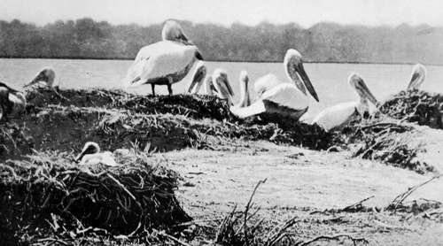

XI. The Balkans Revisited : Albania
Description
This section is from the book "Bird-Hunting Through Wild Europe", by R. B. Lodge. Also available from Amazon: Bird-Hunting Through Wild Europe.
XI. The Balkans Revisited : Albania
On returning to Durazzo I had again to face the vexations of the custom-house. It will, perhaps, hardly be believed, but the gun, rifle, pistol, and cartridges which had been seized before and returned barely a week ago were again confiscated. Not only that, but they refused to release any of my luggage until the next day. I wanted particularly one portmanteau to enable me to dress for dinner; but although it had been opened and shown to contain nothing but clothes they obstinately refused to give it up. Three times the kavass went to demand it in vain, and it was only obtained at last by the urgent representations of the dragoman attached to the Austrian Consulate, and then too late to be of any use, and I had to appear at dinner in knickerbockers.
Once more I had to invoke the assistance of the British Consul at Scutari, and the Embassy at Constantinople. They must have been very sick of me and my guns ; but finally a telegram was received by my friends at the custom-house which compelled them, nolens volens, to disgorge, and they did so, but with a very bad grace. I have no doubt they thought they had made a good haul.
But all this took some time to accomplish ; and while I was waiting for a reply a call was made on the governor-a new one since I was here last year-and I was formally presented and introduced by B-. He was, of course, politeness itself, and after the usual coffee and cigarettes I was introduced by his Excellency to the head of the gens d'armerie, who there and then received special instructions to look after my protection and furnish me with guards whenever I wanted to make any expedition into the surrounding country. At the same time profuse promises were made for the return of my weapons ; but if it had not been for the influence I had brought to bear on the authorities, I have more than a strong suspicion that I should never have seen my things again. It came to light, moreover, that by a treaty or agreement between Turkey and Great Britain, which B- luckily found among his papers, that I was within my rights in bringing weapons for sporting purposes into the country for my own use, although otherwise the importation of arms is strictly forbidden.
As for the offer of guards, B- thought it advisable, as a matter of policy, and not to offend the authorities, that I should avail myself of their services from time to time. Last year the then governor had protested at my riding about the country as I did, and declared it was not safe. As a matter of fact I was a good deal safer with Marco riding behind with a magazine rifle, and a revolver in his belt, without counting my own rifle and revolver, than under the safe conduct of his men. Not that they would dare to do anything to harm a foreigner, especially an Englishman; but they are not above robbing the country women of their few ornaments when they meet them alone, and otherwise acting more like brigands than police.
So one day when I wanted to have a little shooting in the lagoon, application was made for a man to accompany me. For his services, and for acting as retriever, wading into the lagoon to pick up the birds I shot, I paid rather less than eighteenpence, with which he was perfectly satisfied. His uniform was completely in rags, and on his feet he had pink-and-white striped socks and heelless slippers, hardly the footgear one would choose for the thick adhesive mud and shallow pools through which we had to go. Of course I could only communicate with signs, but he was very willing and civil. On our way back I met with a good many Snipe, but it was getting late, and I found it impossible to see them, as they dodged round the tall clumps of rushes and settled again before I could shoot. The bag in consequence was light when we returned.
There was a sporting family of Albanians higher up the lagoon whom we used to employ on duck-shooting expeditions as boatmen and beaters. But the boats here are of very primitive construction, merely rude dug-out canoes, cracked with the heat of the sun, and exceedingly ancient. On one occasion three of these canoes lashed together failed to support the weight of B-, myself, and the man who was to paddle us in search of Pelicans. The water came over the top at such a rate that it was evidently impossible to proceed in such unseaworthy craft, and we had to land and devote our attention to Woodcock on the hillsides instead of the waterfowl and Pelicans.
Talking of Woodcock reminds me of a beautiful cream-coloured variety with a few pale-brown markings which had been given me on arrival by B-. It had been shot some days before, and was unfortunately in a very tender state when I got it; and a Woodcock, especially when fat, is at all times a very difficult bird to skin. However, I made a fairly good specimen of it considering that the feathers were beginning to come out when I took it in hand.
Later we succeeded in procuring some canoes able to float us, and had some enjoyable days in the lagoon after the duck. B- used to lie up among the herbage on one island, and I would do the same on another at a little distance; while the man would paddle round and disturb the ducks, putting up the flocks as soon as they had congregated together. But the pace the Pintails, Teal, Wigeon and other ducks would pass our stands was astonishing. Sometimes a falling duck or two would splash into the water in reply to our fire ; sometimes a cripple would require another cartridge to stop it; but on the whole the weight of the bag would be wofully light in comparison with the expenditure of cartridges. Once I remember bagging five birds with six cartridges, but as a rule the results were far less satisfactory ; and when the man returning from his long round to pick us up at the end of the day found me empty-handed, as once happened, I felt rather small.

Continue to: